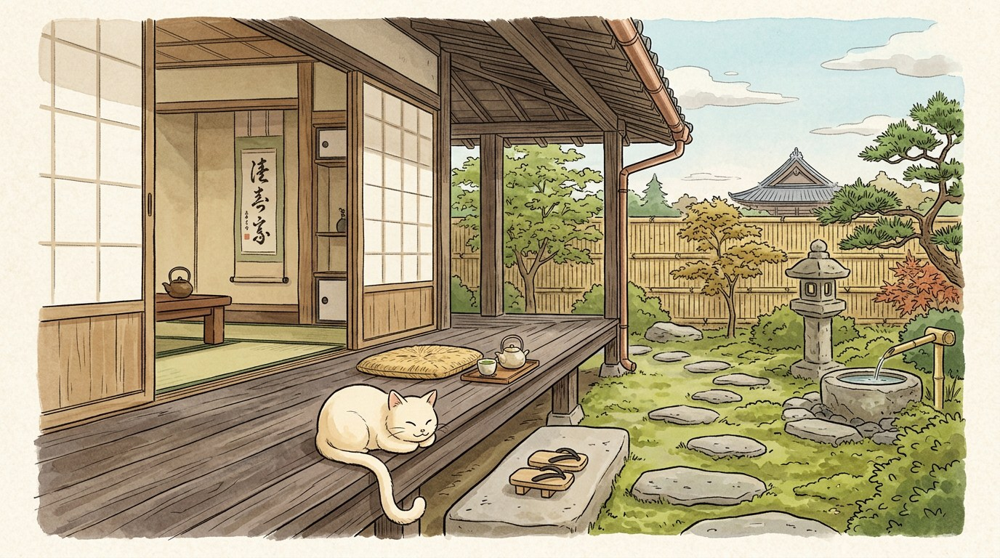
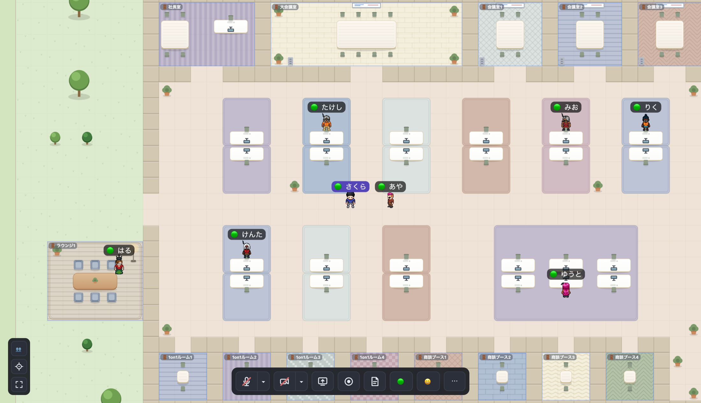
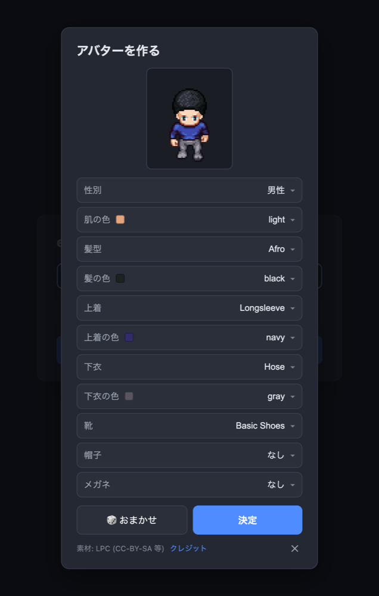

ばったり会って、ちょっと話す。
engawa（縁側）は、ブラウザだけで使えるバーチャルオフィス。2Dマップでアバターを動かし、誰かに近づくと音声・ビデオ・画面共有が自動でつながります。離れれば、自然と切れる。

縁側は、家の内と外のあいだにある板の間。ENGAWA · 縁側
用がなくても腰掛けられて、通りかかった人となんとなく言葉を交わす——そんな場所でした。
リモートワークで失われがちな「ばったり会って、ちょっと話す」を、画面の中に取り戻したい。
画面は、こんな感じ。
2D のオフィスフロア。デスクや会議室ゾーンが並び、アバターで自由に歩き回れます。

近づくだけで、つながる。
Slack のハドルや Gather.town のような「ちょっと話しかける」体験を、軽く。
近接音声通話
一定距離まで近づくと自動で音声がつながり、離れると自動で切れる。
ビデオ通話
カメラ ON で顔出し。話している人の枠がふわっと光る。
画面共有
ワンクリックで共有。小窓・サイド・全画面を切り替え。
録画
フロア＋画面共有＋全カメラ＋全員の音声をブラウザ上で合成して録画。
アバター
髪型・服・肌の色まで、自分だけのドット絵アバターを作れる。
ステータス
オンライン / 取り込み中 / 離席中 を切り替えて意思表示。
安定した通話
2 人以上の通話は既定で SFU 配信。1 人の回線が不安定でも、ほかの人の通話は乱れない。
回線に合わせて調整
回線が悪くなると、画質から順に落として声を守る。切れても自動で再接続。
ノイズ除去
キーボードや空調の音をブラウザ内で除去。話していない間はマイクを自動で無音に。
退室で自動オフ
会議室を出ると、マイク・カメラ・画面共有が自動でオフに。
入室パスワード
パスワードを設定すれば、知っている人だけが入れる。未設定ならオープン。
アプリとして常駐
Chrome / Edge にインストールして、独立ウィンドウで起動できる。
文字起こし・要約
ボタンひとつで会話を文字に（Groq の API キーを使用）。同じ会話の全員に共有され、要約は Chrome 内で完結。
共有中も顔が見える
画面共有中、相手の顔を常に最前面の小窓に表示（Chrome / Edge）。
プッシュトーク
Space キーを押している間だけ話せる。雑音の多い場所でも安心。
相手ごとの音量
声が小さい人・大きい人を、相手ごとに 0〜200% で調整。

アバターは、自分でつくる。
性別・肌の色・髪型・服・帽子・メガネまで細かく。ドット絵は LPC（Liberated Pixel Cup）の素材を使い、思い思いの姿で縁側に座れます。
メディアは、
engawa を経由しない。
音声・映像・画面共有は、2 人以上なら Cloudflare Realtime SFU 経由でつながります（SFU を設定しなければ WebRTC の P2P）。engawa のサーバーがやるのは「出会いの仲介」と「位置の同期」だけ。だから軽くて、低コスト。
-
1
出会いの仲介だけ
誰と誰が近いかを判断し、WebRTC のシグナリングを中継する。
-
2
メディアは P2P / SFU
実際の音声・映像は Cloudflare の SFU（または端末どうし）を直接通る。
-
3
状態を持たない
DB 不要。再起動すればまっさらに戻る、シンプルなサーバー。
人が増えても、
請求は増えない。
バーチャルオフィス SaaS との違いは、機能の数ではなく構造です。
$3 の内訳: fly.io の最小インスタンス 月 $2.19 ＋ Cloudflare Realtime の無料枠（月 1,000GB まで無料、超過 $0.05/GB）。20 人が毎日 2 時間話して約 150GB です。
すぐに、動かせる。
オープンソース。Docker で起動して、リバースプロキシで HTTPS を終端するだけ。特定ホスティングに縛られません。
# クローンして cp .env.example .env make up # → https://engawa.localhost
素材への感謝
LPC
アバターのドット絵は Liberated Pixel Cup の素材を使用。作者・出典はリポジトリの CREDITS.csv に個別に記録しています。
CC-BY-SA 3.0 ほか / et al.Kenney — Roguelike Indoors
オフィスのマップタイルは Kenney の素材を使用しています。
CC0※ これらの素材ライセンスは、engawa 本体コードのライセンスとは分離して扱います。